Folder Management - Test Report
Feature Details
Extension: Evoq.PersonaBar.Assets
Feature: Folder Management
Description: Complete folder lifecycle management including creation, deletion, moving, and synchronization with permission controls
UI Location: Admin > Content > Assets > Folder Tree / New Folder Button
Priority: Top
Test Date: January 6, 2026
Test 1: Create Single Folder
PASS
What was tested
Creating a new folder with a valid name in the Home directory
Steps Taken
- Navigated to Admin > Content > Assets
- Clicked "Add Folder" button
- Entered folder name "TestNewFolder2026"
- Selected folder type "Standard"
- Clicked "Save" button
- Verified folder appears in the folder list
Screenshots
Assets Manager Initial View:

Add Folder Dialog:
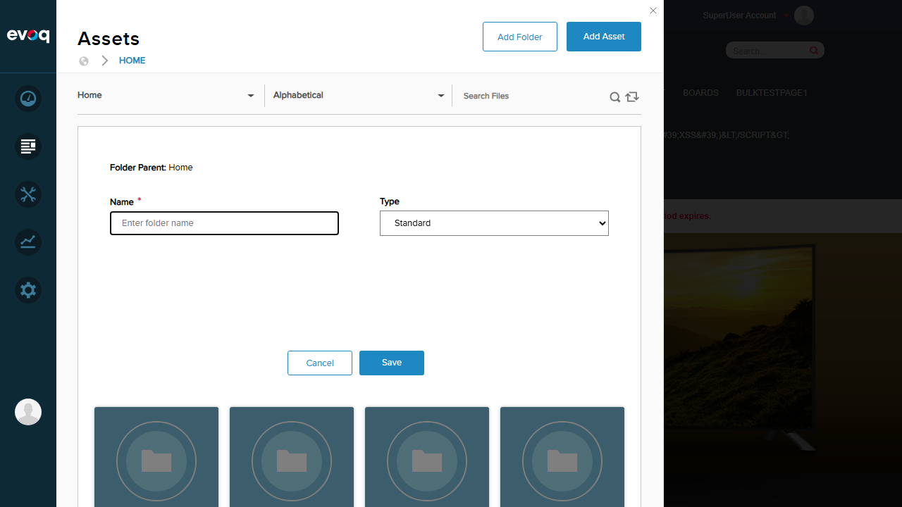
Folder Created Successfully:
Result
Folder "TestNewFolder2026" was created successfully and appears in the folder list.
Test 2: Create Nested Folders
PASS
What was tested
Creating a subfolder inside an existing folder to verify nested folder hierarchy
Steps Taken
- Navigated into "TestNewFolder2026" folder
- Clicked "Add Folder" button
- Entered folder name "NestedSubfolder"
- Clicked "Save" button
- Verified subfolder appears inside the parent folder
Screenshots
Inside Empty Parent Folder:
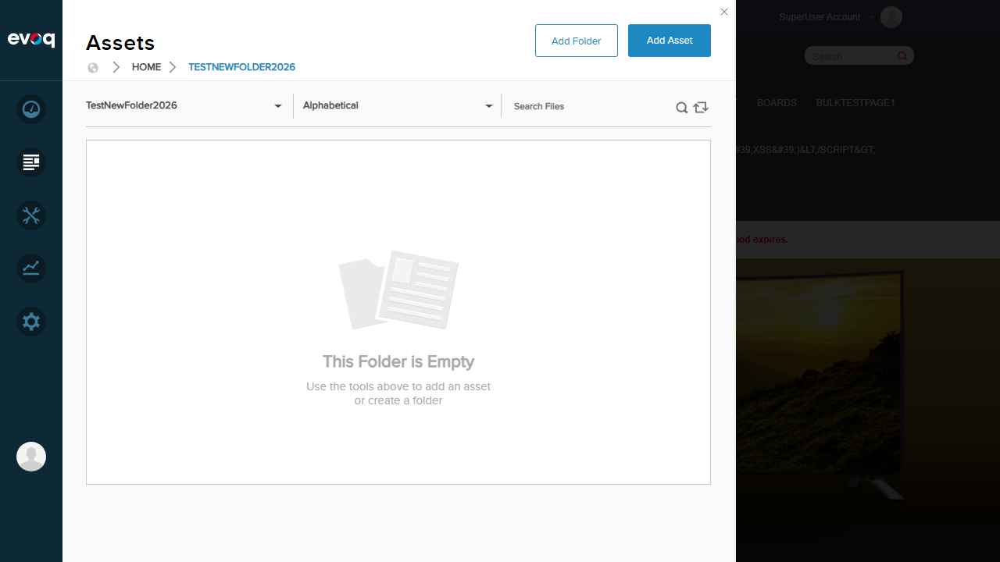
Nested Folder Created:
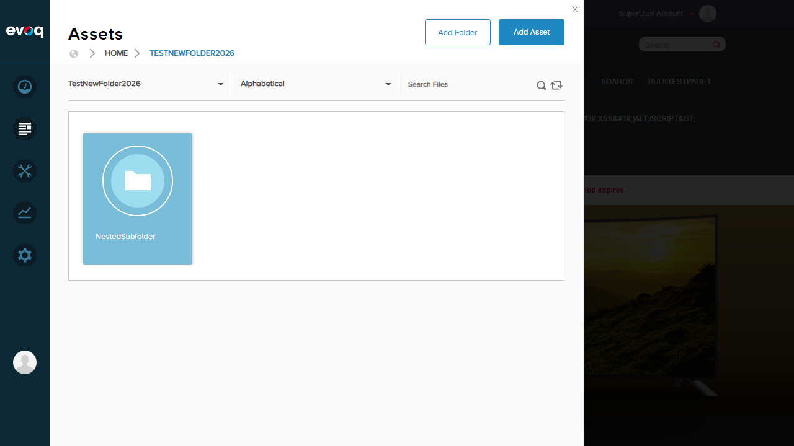
Result
Nested folder "NestedSubfolder" was created successfully inside "TestNewFolder2026".
Test 3: Create Folder with Invalid Name
PASS
What was tested
Attempting to create a folder with invalid characters (/, *) to verify validation
Steps Taken
- Clicked "Add Folder" button
- Entered invalid folder name "Invalid/Folder*Name"
- Clicked "Save" button
- Observed validation error message
Screenshots
Validation Error for Invalid Characters:
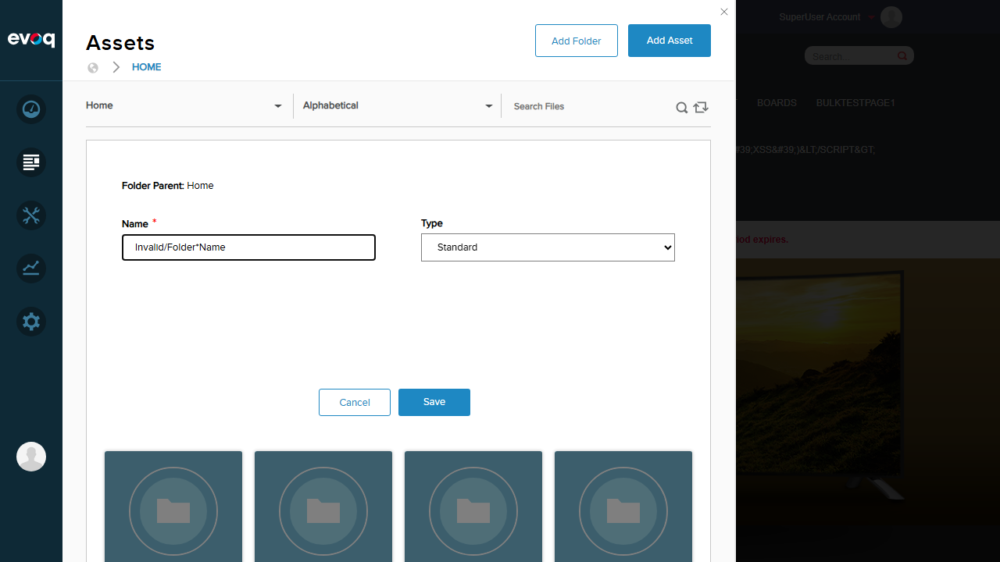
Result
System correctly displayed validation error: "The name contains invalid characters. Please remove these characters: / *" - Invalid folder names are properly rejected.
Test 4: Delete Empty Folder
PASS
What was tested
Deleting an empty folder to verify the delete operation works correctly
Steps Taken
- Navigated back to Home folder
- Hovered over the "NestedSubfolder" folder
- Clicked the delete (trash) icon
- Confirmed deletion in the dialog
- Verified folder was removed from the list
Screenshots
Before Delete - Folder List:
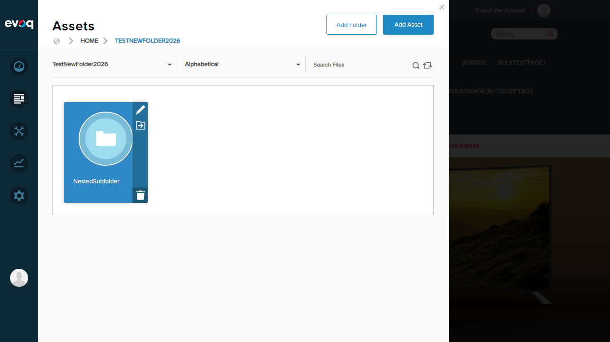
Delete Confirmation Dialog:
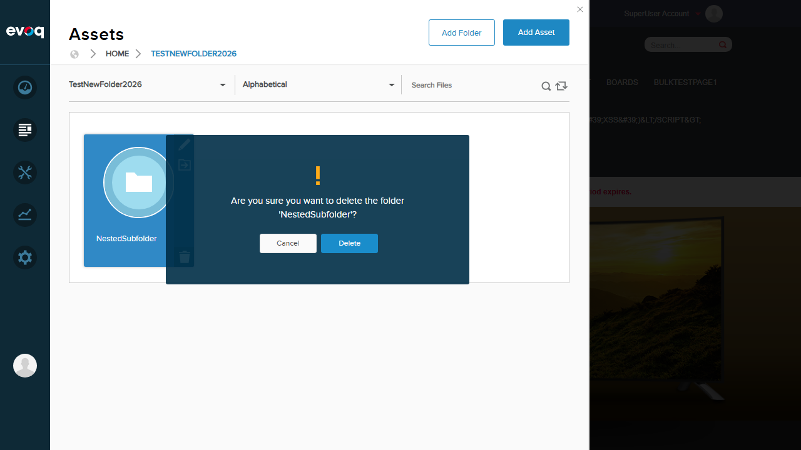
After Delete - Folder Removed:

Result
Empty folder was deleted successfully after confirmation.
Test 5: Delete Folder with Contents
PASS
What was tested
Deleting a folder that contains subfolders and files to verify recursive deletion
Steps Taken
- Navigated to Home folder
- Located "TestFolder1" folder (which contained subfolder and multiple files)
- Clicked the delete icon on the folder
- Confirmed deletion in the dialog
- Verified folder and all contents were removed
Screenshots
Images Folder Contents (showing files before deletion):

Delete Confirmation for Folder with Contents:
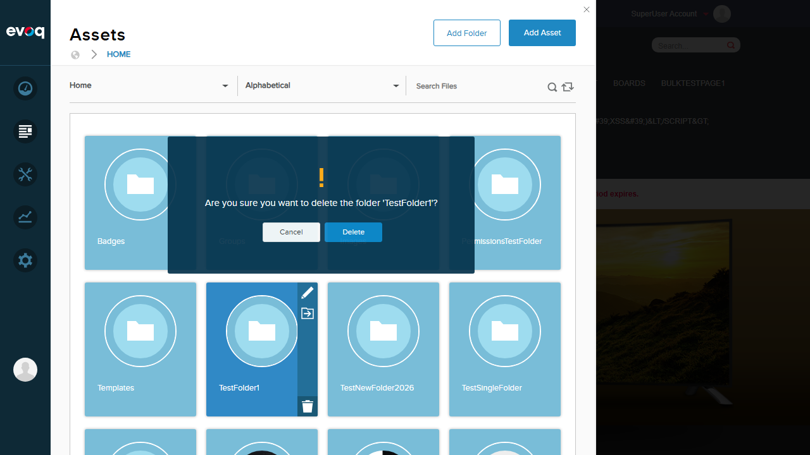
After Delete - Folder with Contents Removed:
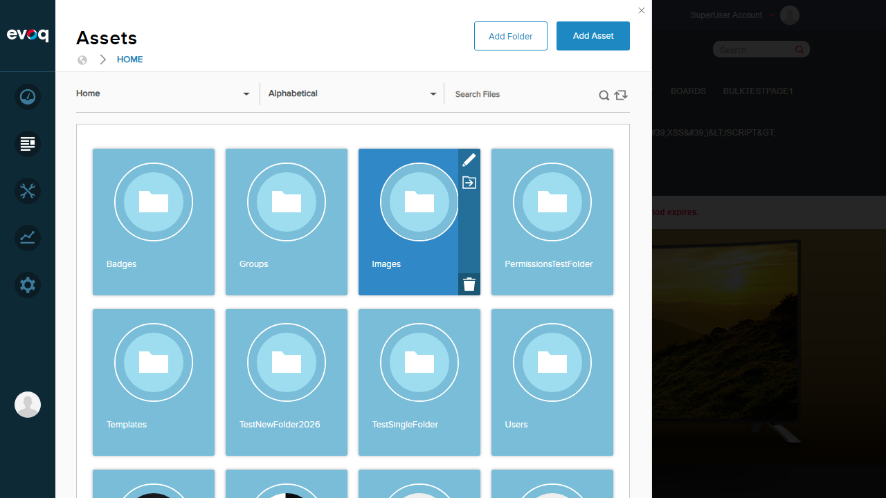
Result
Folder containing subfolders and files was deleted successfully along with all its contents.
Test 6: Move Folder to Different Location
PASS
What was tested
Moving a folder from one location to another using the move dialog
Steps Taken
- Located "TestSingleFolder" in the Home directory
- Clicked the move icon on the folder
- Selected "TestNewFolder2026" as the destination in the move dialog
- Clicked "Move" button
- Verified folder no longer appears in Home
- Navigated into TestNewFolder2026 to verify folder was moved there
Screenshots
Move Dialog - Select Destination:
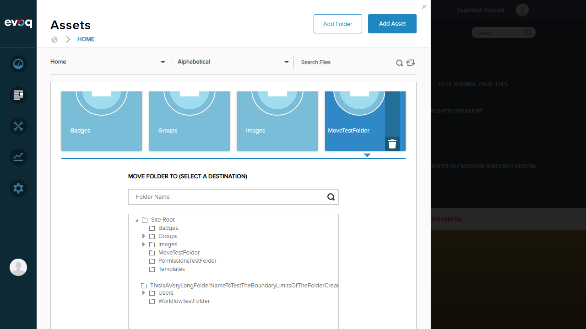
Home Folder After Move (TestSingleFolder no longer visible):
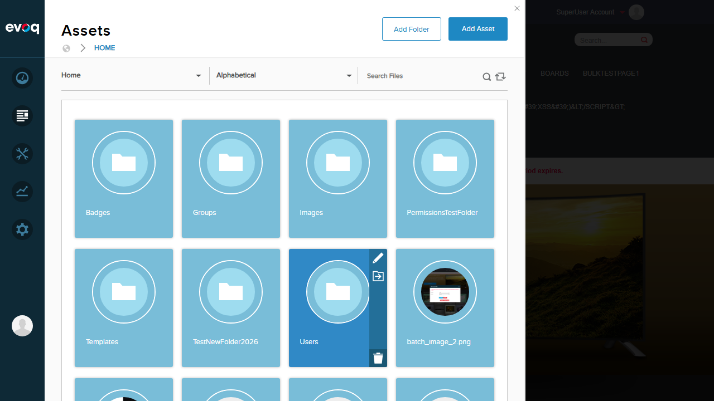
Destination Folder Showing Moved Folder:
Result
Folder "TestSingleFolder" was successfully moved from Home to TestNewFolder2026.
Test 7: Edge Cases (Empty Input, Long Names)
PASS
What was tested
Testing edge cases including empty folder name and very long folder names
Steps Taken - Empty Name
- Clicked "Add Folder" button
- Left the name field empty
- Clicked "Save" button
- Observed validation error "Text is required"
Steps Taken - Long Name
- Clicked "Add Folder" button
- Entered a very long folder name (~160 characters)
- Clicked "Save" button
- Verified folder was created successfully
Screenshots
Empty Name Validation Error:
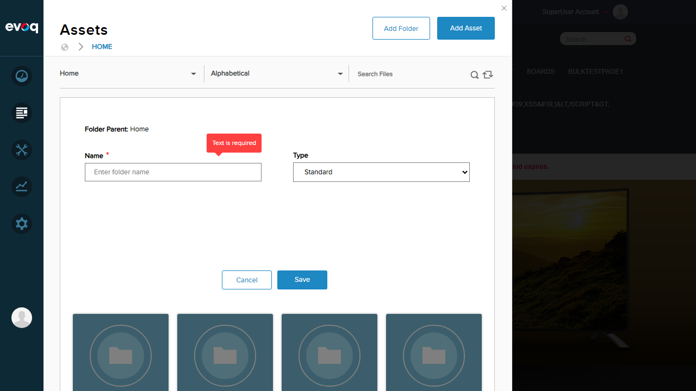
Long Folder Name Created Successfully:
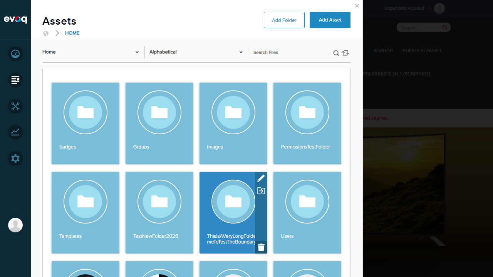
Result
Empty folder names are correctly rejected with "Text is required" error. Long folder names (160+ characters) are accepted by the system.
Test 8: Synchronize Folder Contents
PASS
What was tested
Using the folder synchronization feature to refresh folder contents with the file system
Steps Taken
- Navigated to Home folder
- Located the "Sync this folder and subfolders" button in the toolbar
- Clicked the sync button
- Observed the folder list refresh
Screenshots
After Synchronization - Folder List Refreshed:

Result
Folder synchronization completed successfully - the folder list was refreshed to reflect the current state of the file system.
Observations
- Folder Mapping Configuration: The Add Folder dialog shows a "Type" dropdown with options including Standard, Secure, Database, Box, and Dropbox folder mappings. This indicates folder mapping is configurable through the UI, but testing requires specific cloud storage credentials.
- Unlinking Status: Code suggests unlinking features exist (FolderMappingController.CanDeleteUnlinkMapping), but this functionality is primarily relevant for linked folder providers (Box, Dropbox, etc.) and requires specific provider configuration to test.
- Recursive Synchronization: The sync button tooltip says "Sync this folder and subfolders" indicating recursive sync is the default behavior.
- Long Folder Names: The system accepts folder names up to at least 160 characters without validation. This could potentially cause issues with Windows file path length limits (260 characters) if deeply nested.
- Action Icons: Folder action icons (edit, move, delete) are displayed on hover over folder cards. The move icon is only visible when not at root level (rootFolderId > -1).
- Permission Checks: Code shows permission validation for folder operations (canEdit, canMove, canDelete, canCopy), but permission-based testing requires setting up different user roles.